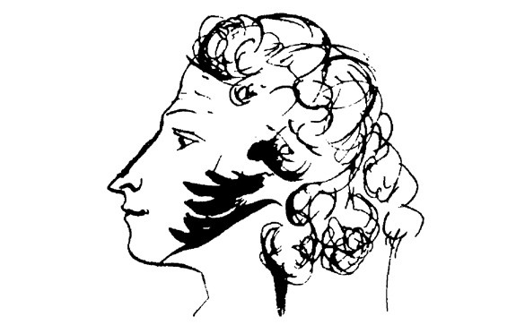

Юлия Юдина

Контакты:
GitHub
Телефон: +79105982076
E-mail: yuliayu77@gmail.com
МОЙ ПУШКИН
В красной комнате был тайный шкаф. Но до тайного шкафа было другое, была картина в спальне матери – «Дуэль». Снег, черные прутья деревец, двое черных людей проводят третьего, под мышки, к саням – а еще один, другой, спиной отходит. Уводимый – Пушкин, отходящий – Дантес. Дантес вызвал Пушкина на дуэль, то есть заманил его на снег и там, между черных безлистных деревец, убил. Первое, что я узнала о Пушкине, это – что его убили. Потом я узнала, что Пушкин – поэт, а Дантес – француз. Дантес возненавидел Пушкина, потому что сам не мог писать стихи, и вызвал его на дуэль, то есть заманил на снег и там убил его из пистолета в живот. Так я трех лет твердо узнала, что у поэта есть живот, и, – вспоминаю всех поэтов, с которыми когда-либо встречалась, – об этом животе поэта, который так часто не-сыт и в который Пушкин был убит, пеклась не меньше, чем о его душе. С пушкинской дуэли во мне началась сестра. Больше скажу – в слове живот для меня что-то священное, – даже простое «болит живот» меня заливает волной содрогающегося сочувствия, исключающего всякий юмор. Нас этим выстрелом всех в живот ранили…
- ЛИЦЕЙ (1811-1817);
- В ПЕТЕРБУРГЕ (1817-1820);
- ЮЖНАЯ ССЫЛКА (1820-1823);
- ССЫЛКА В МИХАЙЛОВСКОЕ (1824-1826);
- МОСКОВСКИЙ ПЕРИОД (1826-1830);
- БОЛДИНСКАЯ ОСЕНЬ (1830);
- ТВОРЧЕСТВО 30-Х ГОДОВ (1831-1837).
А.С. Пушкин. ПИКОВАЯ ДАМА
Анализ текста повести с использованием веб-приложения Voyant Tools